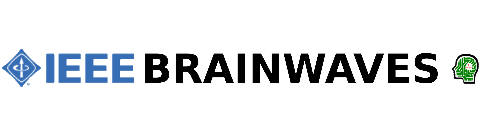

IEEE Brainwaves won the Best Student Chapter award of Dwarkadas J Sanghvi College of Engineering for the year 2016-17. The highlights being the visit to Pratham Satellite at IIT Bombay, and the Smart Navigation Seminar by Dhaval Shroff.The committee was presented the award for its year round work at the College annual function.

Litre of light is an open source design for a low-cost light bulb that refracts solar light to provide daytime interior lighting for dwellings with thin roofs. We at IEEE are planning to emulate this concept and light up homes with no electricity supply.
The IEEE Mentorship Program is designed to connect 3rd year students with DJSCOE alumni, and they in turn pass on the knowledge to the 2nd year students. Allowing them the opportunity to gain valuable experience and advice for career development.
The relationship between mentors and mentees is viewed as a partnership and the length of each Mentor match is approximately 6 months. The Mentorship Program is not intended as a job placement service for students, but is offered as a tool for students seeking career path advice from successful and experienced DJSCOE alumni.

The mentorship program was kicked off by Electronics Department Alumnus Mr. Rahul Shetty, who has done his specialization in Process Control Systems, Embedded Systems and Hybrid Electric Vehicles. A vast array of topics were discussed by him that resulted in an interactive session from the students’ side as well. His primary focus was to encourage the students to learn based on their interests. Upcoming technologies such as AI and their implications in Machine Learning and Neural Networks were discussed by him ...

Siddhant Gangapurwala graduated from D. J. Sanghvi College of Engineering in 2016 where his primary focus was on Embedded Systems for Robotic applications. He worked on a Semi-Autonomous Quadcopter as a final year project and has continued in the direction of Control Systems and Robotics for his research. After taking a year off to work on a few personal projects including ‘Financial Sector Behavior Prediction’, ‘Autonomous AGV for Industrial Setting’ and ‘Visual Odometry for Mobile Robots’, he moved to Oxford to pursue a Doctor of Philosophy (DPhil) in AI and Robotics.
Rushabh Doshi briefed the students during an industrial visit to his factory Machinecraft. A brief introduction about the machine classifications and the overall machine processing units was delivered. Various pneumatic and hydraulic components were well explained to which the students were able to experience the real working of such systems that they had studied in the instrumentation subjects. The company has come up with the advance thermoforming technique to manufacture machines that deliver accurate and high end results.
Viraj Padte is a notable alumni of D.J. Sanghvi. He is currently working as a software deevelopment engineer at Data Ductus. The Session was conducted via Skype on 25th January 2018. The main topic of discussion was IOT and the inroads it is making in various sectors. Mr. Viraj Padte began the session by putting forth his plans for the program wherein he plans to give an overall understanding of various technologies used for implementation of a robust and scalable end to end IOT solution. He moved ahead by walking the attendees through basics of IOT ...
Data Analytics is a new term for many people, “Data Analytics refers to qualitative and quantitative techniques and processes used to enhance productivity and business gain.” Data is extracted, acknowledged and bifurcated to identify and analyze behavioral data, techniques and patterns can be dynamic according to a particular business’s need or requirement. Data Analytics is a broader term that has analysis as a subhead and analytics is basically the concepts used to do the analysis. Ms. Hiloni Punatar will be presenting the students with an opportunity to intern as a data analyst.
Ranveer Allahbadia,the current YouTube sensation have taken the internet to a storm with his encouraging fitness videos and grooming tips for both men and women. He has been an alumni of D. J. Sanghvi College Of Engineering, EXTC, Batch of 2012. He started off his YouTube channel ‘BeepBiceps’ in 2015 with a mindset of educating the younger generation with the various fitness hacks and wellness tips. Initially, BeerBiceps started off as a fitness and cooking channel, primarily his two biggest passions at the time.
An Industrial visit to Machinecaft.org, Mira
Road (East) was organized by the IEEE
Committee of Dwarkadas J. Sanghvi
College Of Engineering on Tuesday, 23rd
January,2018.
The purpose of the visit was to enhance
industry exposure of the students and to
get practical insights into manufacturing
procedures.
The committee visited the
company to interact with the machine
Industry and to understand current market
scenarios, latest demanding technologies &
criteria for selection etc.
Machinecraft was started in 1980 by Mr.
Bhanuchandra Doshi, polymer chemist
from UDCT, Mumbai. The company had it's
humble beginnings in the 80s when vacuum
forming machines were introduced in India.
The company grew at large and started
using modern control systems and
techniques with the advent of the second
generation in the family company.
Machinecraft has continually innovated and
introduced forming machinery in India and
have participated in global fairs like the K
fair, Plastindia and Plastivision.
IEEE Brainwaves came up with its first
event of the year, A Panel discussion on
‘How to create a start-up’ on 24 th
January, 2018.
India has witnessed a major start up
revolution in the past decade; there has
been a greater emphasis on pushing the
youth towards creating innovative start-
ups. The discussion aimed at igniting
young minds to be Change makers of
tomorrow.
The discussion was moderated by Prof.
Mayur Parulekar and involved, Hiloni
Punatar (Co-founder, Think Digital),
Osborne Saldanha(Associate, Tuscan
Ventures),
Sumit
Ranka(Founder,
Thinkpot; Co-founder, Innov8), Ranveer
Allahbadia (Founder, BeerBiceps).
The
discussion addressed different aspects of
building a start-up like content creation,
marketing, finance etc., with each
panelist giving their insight into the
intricacies of binding together these
aspects in order to work towards a
successful start-up.
Mr. Ranveer Allahbadia addressed how
his interest in fitness led him on to
YouTube, where he aimed at addressing
the lack of content for the Indian
audiences.
IEEE Brainwaves yet again conducted
a successful seminar on how to crack
the civil services examinations which
was delivered by Mr. Prajit Nair ,IAS
officer. He is one of the elite alumni
of D.J.Sanghvi college of engineering
(electronics engineering, batch of
2012)who chose to forefront his
career towards civil services after his
graduation.
The seminar was attended by a lot of IAS aspirants
who wanted to get a clear sight of the overall examination
process and learn the mantra of cracking the toughest examination.
IAS remains as the dream job for aspiring youngsters who desires to
bring a positive change in the outlook of the Indian society.
Mr. Prajit shared his experience of preparing for the examination and
gave tips on how to prepare yourself for the various rounds of the
examination process.
He said that the exams consists of overall three stages: the prelims, the mains and the panel review stage.
The entire process of filling up the form, preparation, the exam and the results, takes about a year.
There are millions of cellphone users in
India, but on 6 th February, 2018 there were
a few less. The IEEE Brainwaves came up
with an experiment where the Third and
Second year students of the Electronics
department students would give up the use
of their Phones for a day. In exchange of
this, the students got to attend a Spanish
workshop and the rest of the normal
schedule was used to play some games.
As Margaret Heffernan once said, "The
cellphone has become the adult's
transitional object, replacing the toddler's
teddy bear for comfort and a sense of
belonging" the rather sad truth of our
times. This brings me to Behavioral
addiction; though not same as substance
addiction, there are a lot of similarities
between the two. Let's have a look at some
statistics,
In a study conducted by Baylor University,
cellphone addiction was linked to:
1.Impulsiveness
and
materialism.

IEEE
Brainwaves
conducted an industrial
visit to The Electronics
Devices Pvt. Ltd. , Andheri
(East) on 16 th February
2018.
An introductory session on
power
electronics
was
delivered br Dr. A. K. Paul
wherein
he
discussed
about a number of high
end devices and their
latest applications. Then
the students were taken
for a visit to the industrial
ground of the industry.
Electronics Devices was
established in 1974 by two
qualifed and hard working
engineers to indigenously
produce High Frequency
Dielectric and Induction
heating equipments. The
frst ever fully air cooled
machine in India was
developed and supplied by
Electronic Devices in the
year
2003.
As
per
customers
requirement
features were added for
monitoring & diagnosis.
Today they can boast of
providing all the features
available
with
any
induction
cap
sealer
available in the world.
Smart Navigation seems to be at the cutting edge of the automotive industry. A goal that many automotive companies are pursuing.
The Speaker:
Seminar was conducted by Mr. Dhaval Shroff, an alumnus of DJ Sanghvi College. He completed his Masters in Carnegie Mellon University(CMU). Dhaval works in the R&D department of autopilot, Tesla. Seminar was open to students of all departments.
The Experience:
Mr. Shroff shared his experiences and insights of working in Tesla.
He shared many anecdotes and technical insights of the various technologies he has worked.
There was a keen interest in students to know about Tesla cars and Smart Navigation System.
Q and A session was thus marked the end of seminar.
About the visit:
The first Industrial visit by IEEE Brainwaves was to IIT Bombay; which is home to the first student satellite, Pratham. Pratham is an Indian ionospheric research satellite which is being operated by the Indian Institute of Technology.
The Experience:
The visit to Pratham was a small endeavour, with only 40 students. However, the experience was truly enriching for all. The objective of the visit was to give the students a first-hand experience about the satellite and the entire venture from inception. A brief PowerPoint presentation gave the students an overview of the venture. The students were shown a live feed from Pratham. The students were then taken to the labs where all the testing and engineering had been done. This gave the students an insight into the decade long project that has been going on in IIT Bombay. All of this was then followed by a Q&A session. Each question reflected the keen curiosity of the students of DJ Sanghvi. The Q and A session thus marked the end of the IV.

The Speaker:
Seminar was conducted by Mr. Kaushal Bhuva, an alumnus of our College who is currently pursuing Mtech
from IIT-B in Electronic Systems and has worked in ACG Worldwide R&D Centre. He has won more than 90 robotic events in Mumbai colleges & is a winner of IIT-B Robowars 2016- League Of Legends, Quarter finals in 2017. Member of MSI-IITB team making Mars Rover for URC competition by NASA at Utah & is a mentor for ASME IITB team.
The Experience:
Kaushal Bhuva started with a set of interesting videos each describing the various requirements in building a robot that could both compete and win in the competitions like those at IIT Bombay. The videos were a cornucopia of details on the material as well other components. The interactive Q&A session that followed showed the keen interest of the students. Total number of registrations for the event were 210.

Smart Navigation seems to be at the cutting edge of the automotive industry. A goal that many automotive companies are pursuing.
The Speaker:
Seminar was conducted by Mr. Dhaval Shroff, an alumnus of DJ Sanghvi College. He completed his Masters in Carnegie Mellon University(CMU). Dhaval works in the R&D department of autopilot, Tesla. Seminar was open to students of all departments.
The Experience:
Mr. Shroff shared his experiences and insights of working in Tesla. He shared many anecdotes and technical insights of the various technologies he has worked. There was a keen interest in students to know about Tesla cars and Smart Navigation System. Q and A session was thus marked the end of seminar. The seminar was attended by 250 students from all departments.

A rather specialized field, but one of great interest nonetheless. Maze solvers are intricately designed robots, requiring knowledge of computers, electronics and mechanics.
The Speaker:
Seminar was conducted by Mr. Abhishek Kamath. He is an alumnus of DJ Sanghvi College. Mr. Kamath is currently working at Intel.
The Experience: .
A maze solver is a robot which holds the capability to move through an entire maze, process the path followed by it and then complete it. It requires intricate design and various sensors to measure several
parameters. Students were given detail information of the same. The seminar was for TE and BE students specifically designed for those who wished to take maze solver as a project. Seminar was attended by 120 electronic department students
Imaginarium is India's largest Rapid Prototyping and Rapid Manufacturing Center. Our visit there was assisted by Abhishek Pathkar, who is an employee of Imaginarium and an alumnus of our college. They provide prototypes to an assortment of industries from jewellery, engineering, automotive, architecture, consumer goods, etc.
The students were given in depth knowledge about manufacturing of various goods and the how the machines were designed and work. Each machine was designed for a different task .A variety of goods right from stationary to gold and silver jewellery are produced there. Overall it was a very good experience for the students as they were introduced to the artistic side of engineering.
The IV was open for all interested IEEE MEMBERS.30 IEEE members visited Imaginarium accompanied by the faculty member Prof. Vivek Nar.

A session on ROBOTICS conducted by Mr. Vivek Nar. The main objective of this workshop was to provide hands on experience on robot building. The students were also introduced to background on competitive robotic design, the fundamentals of building robots from scratch, the mindset of working in a team, building robots for competitions, and demonstration of automated and acquabots and gliders.
Mr. Vivek Nar is a faculty member of the Electronics department of our college. An expert at robotics, and former winner of various prizes at competitions conducted across the city. All the students who participated made their own bots either in a group or individually. Kits were provided by the committee. Videos of various robotics competitions were played.
Workshop was attended by 45 students from various departments.
The students that are members of IEEE strive to provide various programs as part of Continuous Improvement program and Academic- Industry interaction. Our aim is to give the students exposure to current best practices in the industry. Endress+Hauser Wetzer a German company, one of the leading producers of temperature measurement, temperature engineered solutions and system products worldwide.
It began with the students being briefed about everything related to the company and the activities at the Aurangabad factory. They were then taken for a round of the factory in which each of the manufacturing process was shown to them and explained as to why and how the process is carried out. This was a very interactive and interesting session and the students asked various questions to the experts which were catered to very well. This session generated a lot of interest in the students related to the manufacturing field. Following this there was an orientation given to the students regarding the work culture, ethics, beliefs, objectives, achievements etc of the company.
The seminar was regarding the 5S and kaizen, a Japanese business philosophy of continuous improvement of working practices, personal efficiency, etc.
A 5 S program focuses on having visual order, organisation, cleanliness and standardisation. The IV was open for all interested IEEE MEMBERS 27 IEEE members visited accompanied by the faculty members Prof. Mayur Parulekar and Prof. Vivek Nar.
The event Roboracing was held from 23rd to 25th march in association with Trinity. In this event IEEE Brainwaves had a track designed in an area of 16ft × 16ft. The track consisted of different slopes and challenging obstacles to be driven on, for the participants. The entire track was designed and prepared by the IEEE tech-team with assistance from the SE Co-committee members. There were various checkpoints and each of them on completion earned the player a specific set of points. The fastest and the one earning most number of points was declared as the winner. The average of both time and earned points was used to determine the winner of the competition. The event was also promoted as a fun event. Anyone could play the entire track with the bots that were provided by the organisers. It was ensured that for the competition the participant had to register and get their self-designed bots.
The prizes for the competition were
1st prize- ₹2.7k and 2k worth vouchers
2nd prize- ₹1.5k
3rd prize-₹800
Overall with positive response from the crowd the event was a great success with a lot of positive feedback.